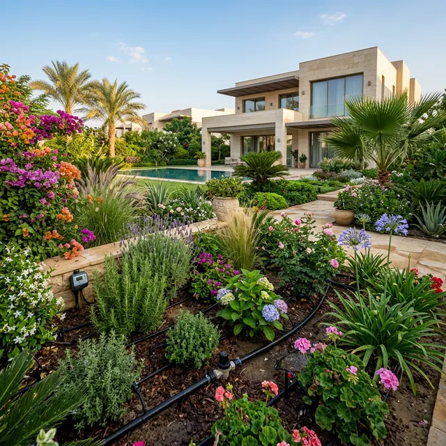

تحويل حديقة سكنية إلى واحة ذكية مستدامة

العميل
فيلا خاصة
الموقع
القاهرة الجديدة
المساحة
1,200 م²
النوع
ري ذكي (تنقيط)
النتائج المحققة
- 35%
توفير في استهلاك المياه السنوي
- 100%
تغطية هيدروليكية متساوية
- 0%
تدخل يدوي في عملية الري
عن المشروع
واجه العميل مشكلة في جفاف بعض مناطق الحديقة رغم زيادة معدلات الري اليدوي، مما أدى إلى ارتفاع فواتير المياه وتدهور حالة النباتات. كان الهدف هو تصميم نظام ري أوتوماتيكي بالكامل يضمن وصول المياه لكل ركن في الحديقة بدقة متناهية.
التحدي الهندسي
تفاوت المناسيب
وجود فروق في الارتفاعات داخل الحديقة كان يتطلب حسابات هيدروليكية دقيقة لضمان ثبات الضغط.
تنوع الغطاء النباتي
وجود أشجار نخيل بجانب شجيرات زينة وأرضيات نجيلة يتطلب معدلات ري مختلفة لكل نوع.
الحل المطبق
قمنا بتركيب نظام ري مقسم إلى 6 مناطق (Zones) مستقلة، يتم التحكم بها عبر لوحة تحكم ذكية (Smart Controller). تم استخدام خراطيم تنقيط معوضة للضغط (Pressure Compensating) لضمان توزيع متساوي للمياه بغض النظر عن المسافة من المضخة.
استخدام حساسات مطر ورطوبة تربة لإيقاف الري تلقائياً في حالة هطول الأمطار.
تركيب محابس كهربائية عالية الجودة من Rain Bird لضمان طول العمر الافتراضي.
إمكانية التحكم في الحديقة بالكامل من خلال تطبيق الهاتف المحمول عبر الواي فاي.
هل لديك مشروع مشابه؟
نحن متخصصون في تحويل المساحات العادية إلى أنظمة مستدامة وذكية. دعنا نساعدك في تصميم نظامك القادم.